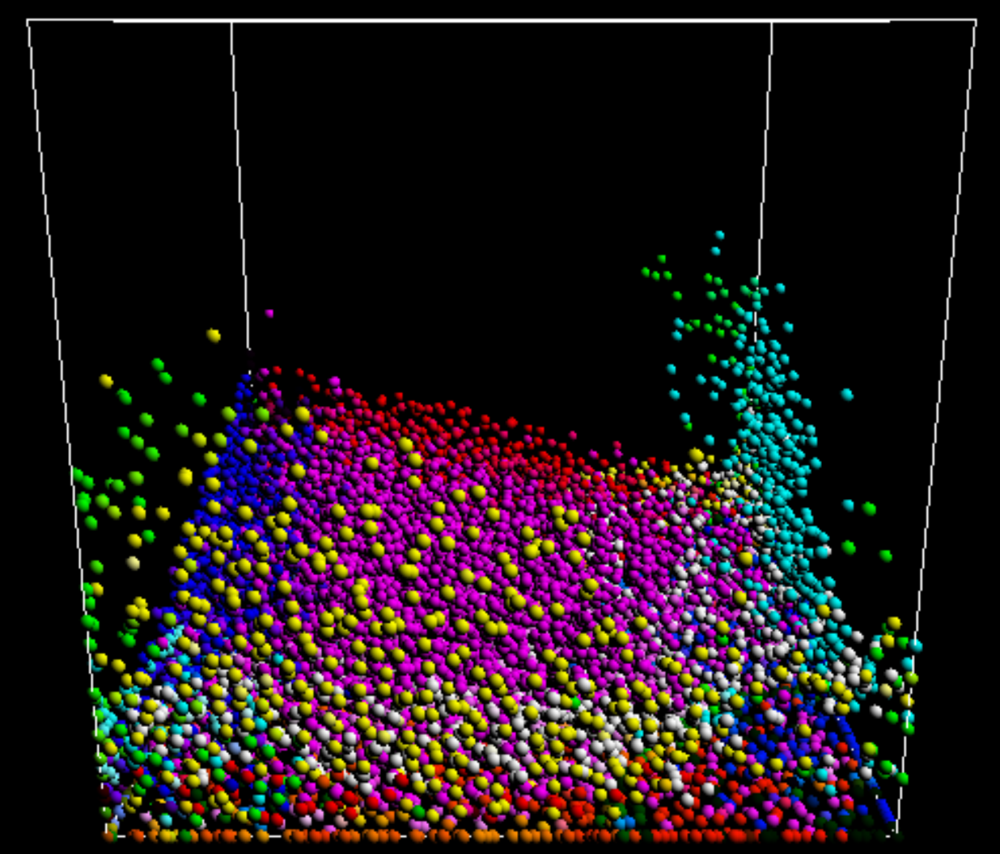

CS 284A: Computer Graphics and Imaging, Spring 2018
Final Project Proposal:
Accelerating Fluid Simulation
Chu-Ming Chang 3033157870, KUAN LU 3033156752, Rongbing Zhou 3033157519
Summary
In this project, we are trying to accelerate fluid simulation algorithm based on Position Based Dynamics (PBD) using GPU. Smoothed particle hydrodynamics (SPH) will be used for simulating the fluid as particles, and surfaces will be reconstructed and rendered from particles.
Part I: Problem Description
Fluid simulation is popularly used in animation, film, etc, and it has been a hot researching area in computer graphics. There are several ways to solve this problem, one of which is Position Based Dynamics (PBD). By using Smoothed Particle Hydrodynamics (SPH), we consider the fluid as the combination of particles, which interact with each other by exerting pressure, viscosity force and surface tension. The conerstone of SPH algorithm is numerical approximation of the Navier-Stroke equation, and to get a realistic simulation, the algorithm requires the system to have tens of thousands of particles and calculate position as well as acceleration for each particle at each timestep, which is very computaionally expensive and poses great difficulty for real-time applications. We would like to accelerate the simulation from both the alorithm and the computation platform. For the algorithm, we plan to Implement Weakly Compressible SPH(WCSPH) or Predictive-Corrective Incompressible SPH(PCISPH), while for computation platfrom, we will use CUDA for parallel execution on GPU.

Part II: Goals and Deliverables
In this project, we aim to develop a real-time fluid simulation and rendering framework using GPU, the goals are as follows:
Planned goals:
Implement basic Smoothed Particle Hydrodynamics algorithm on CPU (10 fps for 50,000 particles).
Implement WCSPH or PCISPH for lower time complexity (20 fps for 50,000 particles).
Implement the above algorithms on GPU using CUDA (60 fps for 50,000 particles).
Fluid surface reconstruction and rendering using marching cube on GPU.
Basic interation: viewpoint changing, adding fluid, static object to the scene, changing the parameter of the simulation and switching between CPU and GPU simulation.
Hoped Goals
Implement adaptive sampling for timestep and space to further accelerate the SPH simulation.
Realistic rendering of the fluid, simulate the foam/spray of sea water.
Advanced Interaction with non-static rigid objects in the scene, for example, water breaks down a dam.
Part III: Schedule
Date
Goal
4/2 – 4/9
Literature survey, CPU SPH implmentation
4/9 – 4/16
GPU SPH implementation and PCISPH implmentaion
4/16 – 4/23
GPU PCISPH implementation and surface reconstuction
4/23 – 4/30
Rendering and Interaction
Part IV: Resources
Liu, M. B., and G. R. Liu. “Smoothed particle hydrodynamics (SPH): an overview and recent developments.” Archives of computational methods in engineering 17.1 (2010): 25–76.
Macklin, Miles, and Matthias Müller. “Position based fluids.” ACM Transactions on Graphics (TOG) 32.4 (2013): 104.
Bridson, Robert. Fluid simulation for computer graphics. AK Peters/CRC Press, 2008.
Bridson, Robert, and Matthias Müller-Fischer. “Fluid simulation: SIGGRAPH 2007 course notes Video files associated with this course are available from the citation page.” ACM SIGGRAPH 2007 courses. ACM, 2007.
Bender, Jan, Matthias Müller, and Miles Macklin. “Position-Based Simulation Methods in Computer Graphics.” Eurographics (Tutorials). 2015.
Bender, Jan, et al. “A survey on position‐based simulation methods in computer graphics.” Computer graphics forum. Vol. 33. No. 6. 2014.
Yu, Jihun, and Greg Turk. “Reconstructing surfaces of particle-based fluids using anisotropic kernels.” ACM Transactions on Graphics (TOG) 32.1 (2013): 5.